四大一小 · 精華景點 · 道地美食 · 湄公河一日遊
中午抵達後輕鬆遊覽第一郡精華景點，傍晚品嚐道地越南料理，夜遊裴援徒步街感受南洋熱帶氛圍。
✈ 07:45 台灣出發 → 🛬 10:20 抵達胡志明市 → 🏨 Check in 飯店（建議第一郡）
🕐 13:00 開始行程
從新山一機場出發，搭 Grab 直接前往飯店。若尚未到 Check in 時間（通常 14:00），可先辦理行李寄存，輕裝出發開始下午行程。建議一抵達便確認房間樓層與周邊地圖，方便後續自行活動。
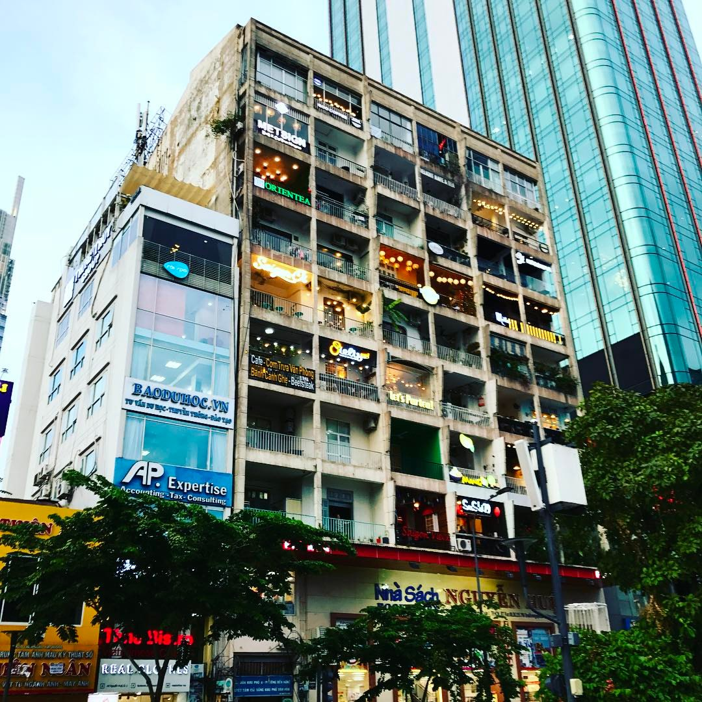
老舊公寓改建的 8 層樓垂直咖啡街，每層有截然不同風格的咖啡廳、精品店與餐廳。強烈建議走樓梯逐層探索，比搭電梯更能感受每層的驚喜！電梯需另付費約 30,000 VND/人。是胡志明市最具代表性的 Instagram 打卡景點，俯瞰阮惠步行街的視角絕美。
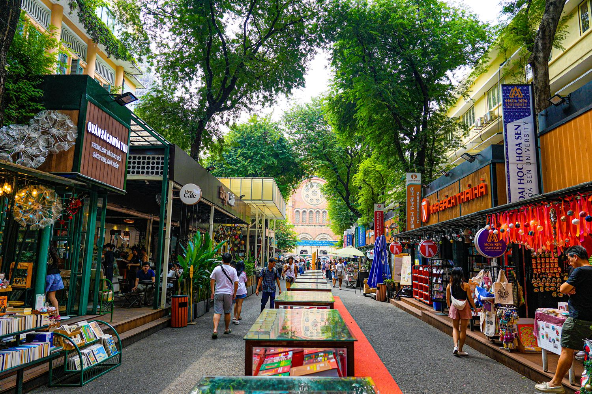
胡志明市最有文青氣息的書市街道，沿途多家獨立書店、明信片攤和越南文創商品。夜晚串燈點亮後更加浪漫迷人。可在此選購明信片寄回台灣，也有英文越南旅遊書可帶走當紀念。
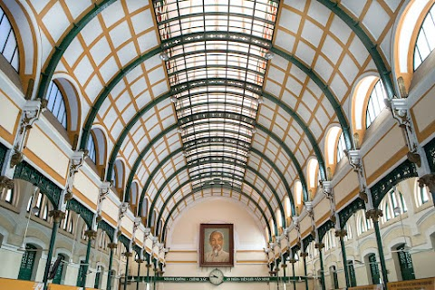
1886年法國殖民時期建造的宏偉郵政局，優雅鑄鐵拱形天花板至今令人嘆為觀止，功能完整至今仍在運作。隔壁的聖母教堂（Notre-Dame）正在整修中，但外觀仍值得拍照留念。可在郵局選購越南特色切花郵票，寄明信片回台灣是很有紀念意義的體驗！
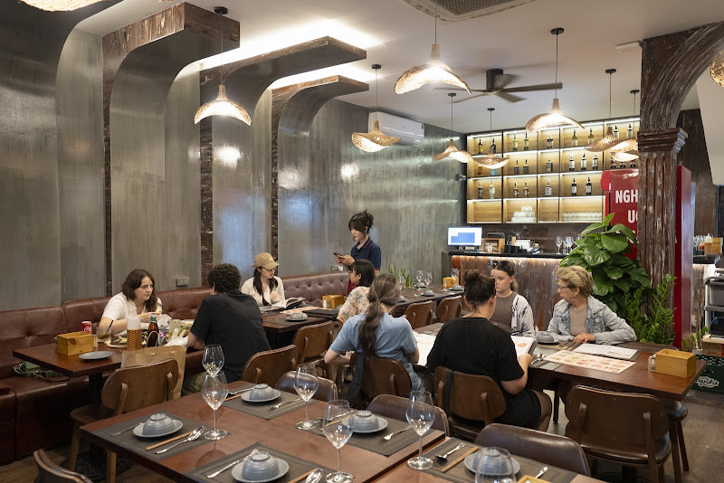
評分高達 4.9 顆星的超人氣越南家常料理！炸春捲酥脆多汁、豬肉湯頭濃郁鮮美。特別推薦：兼有完整的蔬食（Vegan）選項，全家一起用餐完全沒有問題。服務生英語流利，點餐輕鬆無障礙。
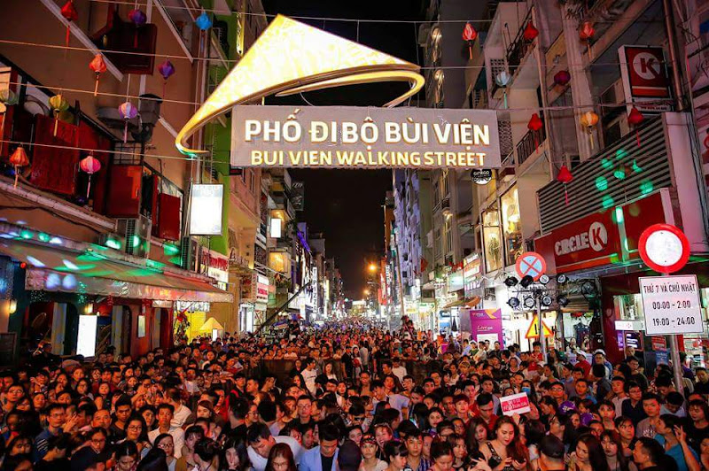
胡志明市最熱鬧的夜市徒步街！每晚 7 點起封街成行人專區，霓虹燈光閃爍、現場音樂演奏不間斷，路邊酒吧「買一送一」啤酒優惠隨處可見。帶小孩感受南洋夜生活氣氛即可，建議不要超過 21:00，保留體力迎接第二天行程。
包車私人導覽一日遊：上午探索越戰歷史古芝地道地下隧道，下午轉往湄公河三角洲體驗竹筏水鄉、椰林農家，感受南越兩大自然人文精華。
🚗 07:30 包車出發 → 🪖 古芝地道（上午） → 🚗 前往湄公河（午後） → 🌙 19:00 返回市區
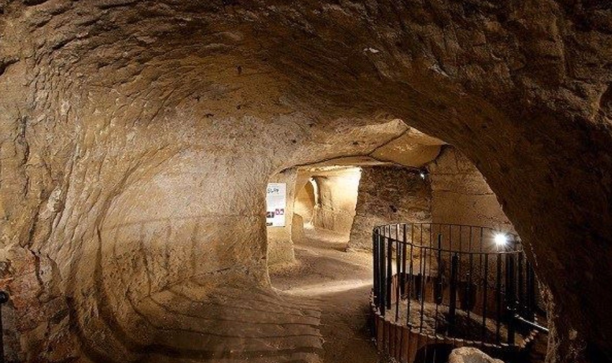
採包車私人導覽出發，全程專屬司機與導遊陪同。古芝地道距胡志明市約 70 公里，車程約 1.5 小時，建議 07:30 從飯店出發，上午參觀完畢約 11:30–12:00，包車再前往湄公河方向。
⚠️ 隧道空間狹窄，有幽閉恐懼症者可選擇在外圍參觀陷阱展示區；孩子通常非常喜歡戶外展示部分。
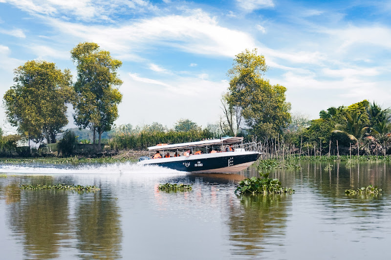
適合各年齡層，孩子尤其喜歡划竹筏和餵食動物的體驗！
⚠️ 需提前預訂，旺季（11–4月）容易額滿。
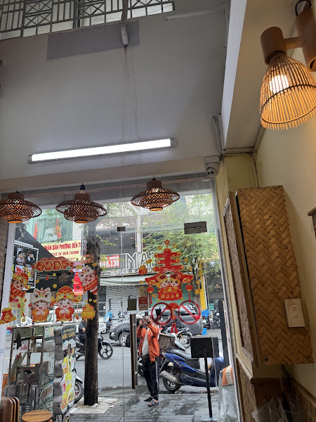
道地北越河內米線（Bún Chả Hà Nội）！香氣四溢的炭烤豬肉搭配新鮮米線，配以清爽魚露湯底，令人回味無窮。份量非常慷慨，建議一份二人分食，可再多點一份越式春捲（Chả Giò）。位在裴援街旁，用餐後可順便夜遊。
深入胡志明市第五郡唐人街，探訪百年廣東會館、殖民騎樓老巷與中西融合教堂，下午轉往市區粉色教堂、傳統市場及戰爭博物館，晚享米其林推薦餐廳。
🏛 09:00 前往堤岸 → 穗城會館・豪士坊・譚神父教堂 → 🌆 下午市區歷史景點 → 🍽️ 晚餐
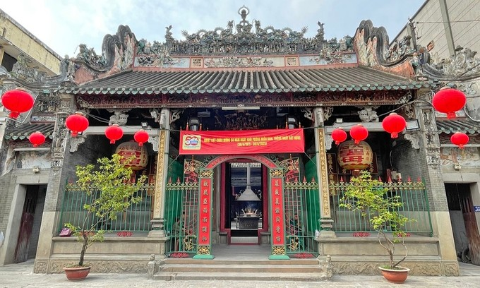
建於1760年代，由廣東移民社群出資修建，供奉海上保護神媽祖（天后）。屋頂以精緻陶瓷人物裝飾，呈現三國演義與民俗故事場景，工藝細膩令人嘆為觀止。殿內香煙裊裊、龍鳳彩繪，是堤岸最具代表性的中國式廟宇建築，攝影效果極佳。免費入場。
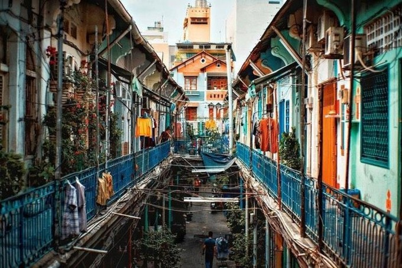
建於1910年代的百年舊街，是堤岸區保存最完整的舊式騎樓建築群。彩色外牆、狹長窄巷、港式生活氣息，讓人彷彿置身老香港街道。早上人潮較少、光線柔和，是拍攝復古建築的最佳時機。完全免費參觀，輕鬆隨意漫步即可。
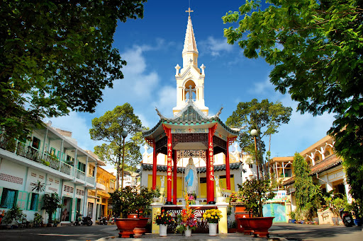
1902年落成，全越南最獨特的天主教堂之一。融合哥德式與中國傳統建築：八角形塔樓、陰陽太極裝飾、雙廊對稱格局，完美體現中西文化交融。教堂因歷史事件廣為人知：1963年南越總統吳廷琰政變時於此地被捕。外觀簡潔大方，是拍攝建築細節的好地點。
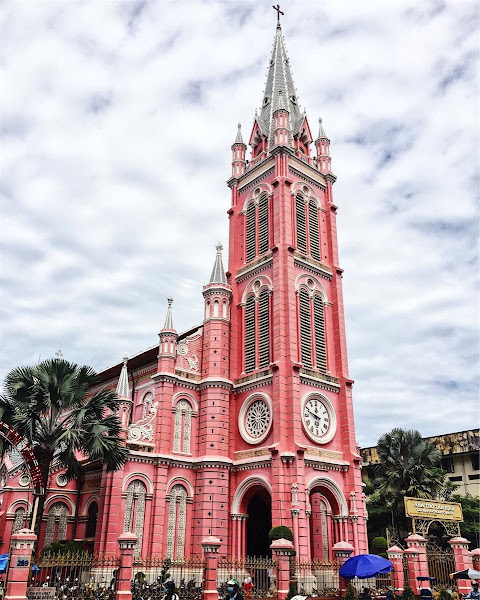
1870年代法國殖民時期建造的天主教堂，全胡志明市最夢幻的地標之一！哥德式羅馬風格搭配大膽的鮮豔粉紅色外觀，在南亞天主教堂中絕無僅有。⚠️ 目前部分整修中，出發前建議確認開放狀況；週六固定不開放。整修期間外觀仍可拍照打卡。
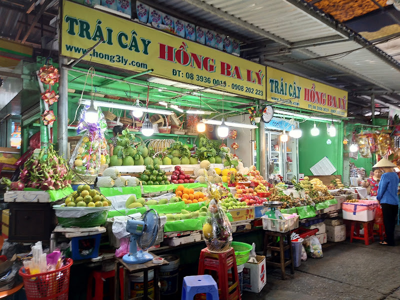
與粉色教堂僅 300 公尺的傳統在地市場，販售乾果腰果、布料服飾及越南傳統服飾（Áo dài）等。有攤販說普通話、廣東話，溝通非常方便！記得嚐試現榨新鮮果汁。推薦購買：帶殼腰果（100g/25,000 VND）、龍眼乾、腰果糖。
越戰歷史必訪場館，館外真實展示戰車、戰鬥機、大砲等軍事武器，館內有豐富歷史照片文獻。部分展區畫面較衝擊（橙劑效應、傷亡紀錄），帶孩子建議選擇性參觀一樓的戰爭器械戶外展區，避開較血腥的樓層。參觀後對越戰歷史會有全新的認識與感受。
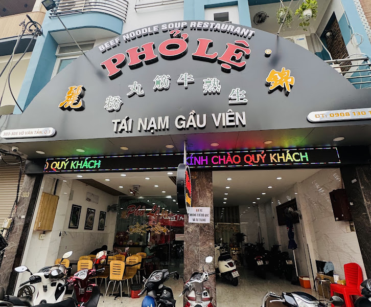
米其林推薦的胡志明市知名牛肉河粉老店。湯頭以牛大骨長時間熬製，清甜不腥；牛肉新鮮鮮嫩，配上豐富香草更添層次風味。建議點「牛腩混合（Phở Tái Nạm）」，料最豐富。早點去不需排隊，份量十足。
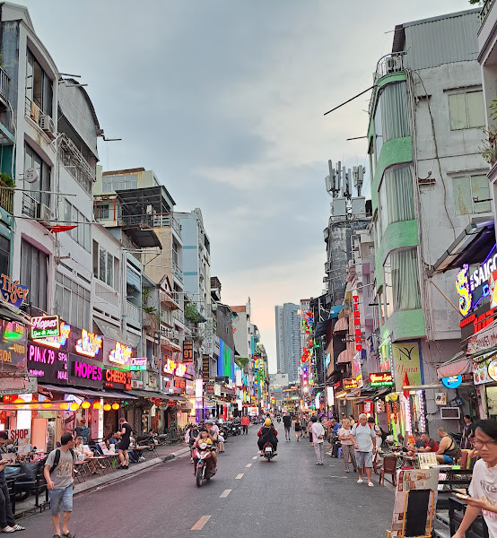
胡志明市最著名的背包客聚集區，各式越南咖啡館、紀念品店、小吃攤集中，是採購伴手禮的絕佳地點。推薦必買：越南咖啡豆（G7/Trung Nguyên）、蛋咖啡豆、椰子糖、辣椒醬。可順逛旁邊的裴援街感受下午的悠閒氛圍。
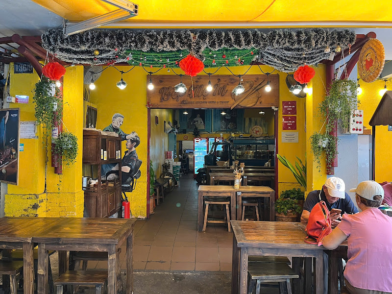
米其林推薦的越南家常料理！以家庭私廚風格著稱，每道菜都充滿溫暖家鄉滋味。招牌越式薄餅（Bánh Xèo）皮薄酥脆、內餡飽滿，是必點菜色。椰子炒飯香氣誘人，炭烤牛肉串外焦內嫩，全家人都愛！週末非常熱門，建議提前訂位。
早晨自由活動把握最後機會採購伴手禮，中午收拾行李，13:00 前往新山一機場搭乘返台班機。
🛍️ 09:00 採購 → 🧳 12:00 回飯店 → 🚗 13:00 前往機場 → ✈ 下午 返台
把握返台前的最後時光，前往書街或范五老街採購越南特色伴手禮。以下是最推薦的採購清單：
新山一國際機場（Sân bay Tân Sơn Nhất / SGN）
→ 台北桃園 TPE
市區至機場約 30–45 分鐘（視塞車狀況），
建議 13:00 準時出發，預留充裕時間辦理登機手續。
市區建議全程使用 Grab App（類似台灣 Uber），可選 GrabCar 5人座剛好全家坐。比路邊計程車便宜且安全，不怕被多收費。建議出發前在台灣先下載好，綁定信用卡使用更方便。
建議下榻第一郡（Quận 1），各大景點大多在 15 分鐘車程內。阮惠步行街、書街、咖啡公寓幾乎步行可達，非常方便。住在這區也讓孩子走路就能感受到城市核心的活力。
新定教堂（粉色）週六固定不開放，且目前整修中，出發前建議再次確認。聖母教堂也在長達10年的修繕工程中，外觀可拍照，但無法進入。行程安排請留意。
胡志明市全年氣溫 28–35°C，帶小孩請務必穿輕薄透氣衣物、準備帽子和防曬乳，勤補水！餐廳和景點大多有冷氣可以避暑。若為雨季（5–11月）建議隨身帶輕薄摺疊雨衣。
胖媽廚房（Bếp Mẹ Ín）和 Hoang's Kitchen 都非常熱門，建議提前預約，尤其週末晚餐時段。可請飯店電話代訂，或在 Facebook 官方粉絲頁上傳訊息預約，通常回覆很快。
建議在台灣出發前或抵達第一天立即委託飯店安排，旺季（11月–4月）非常容易額滿！費用約 600,000–850,000 VND/人，通常含飯店雙向接送和農家午餐。
戰爭博物館建議只逛一樓戶外的武器展區，避開2、3樓較衝擊的展覽。裴援夜市熱鬧但建議不超過21:00。越南菜口味相對清淡，孩子接受度高。湄公河行程孩子超愛，是全程亮點！